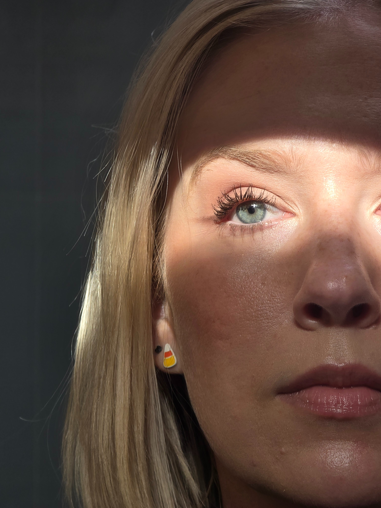

Don't Look For Me
add review text here

The House of My Mother
I think whether or not you know Shari's story and background this is a very interesting and emotional read. I had never heard of her family prior. I truly respect how much detail she didn't include to protect her siblings, I hope they all get to heal and that those guilty in this situation get what is coming to them. I think a lot of people failed Shari and her siblings over the years, including their church, teachers, and neighbors.

Stripped Down
I didn't want to put this down, both the audio and just actual writing were so good. Whether you're a fan or don't even know who Bunnie is, her story is so inspirational and emotional. Gotta respect the hustle 👏🏼 It is truly refreshing to have a memoir that isn't just fluff or skipping over the less glamorous parts.

His & Hers
I definitely saw this twist coming but I am not mad about how it all was revealed. My biggest complaint was it just seemed too long, I was really pushing through for the last half.

The Mad Wife
So well written! This was so heavy and heartbreaking, definitely trigger heavy. It's so scary to think this was (and still in some ways) is a reality for many women. It makes you consider the ones that weren't as fortunate as Lulu to make it out.

Rider of Dragons
I think this had a lot of potential but overall unfortunately it was a miss from me. This could benefit from some added detail, renaming and revamp of the overall description. Classifying this as a "dark and thrilling romantasy" definitely do not match what I read. I would classify this as more of a cozy fantasy, they have cellphones and drink Lavender lattes at the local coffee shop...

The Winter People
I heard such good things about this one and it fully fell flat for me, I was just reading to get through it by the end. There were entirely too many perspectives and back and forth, I feel like I lost so much because I was wondering who was who and how it all tied together. The present day perspectives were the better ones imo.

Heart Life Music
Pretty surface level as far as memoirs go but overall it was interesting to follow Kenny's career timeline.

Project Hail Mary
The entire book is just one long introspective monologue, sooo.. if you're into that, this is for you. I think I enjoyed the ending more than I should have just bc I was excited it was over and finally had a change of scenery. More characters and actual action would have improved this for me. There's only so much science info that your average reader can absorb before it gets boring. I think audible skipped a chapter for me at one point and I truly didn't miss anything relevant.

The Outlaw Noble Salt
I really wanted to like this but the story was too all over the place at the beginning. Basically you didn't need the first 50% of the book. I usually love Amy's writing but some personal things I couldn't get past were just how the characters were referred to with all their nicknames... it's so hard for the reader to follow when you refer to the same person as 3 different names all in a span of a sentence.

My Husband's Wife
wowww, that hook at the end of the first chapter 👀 I was really into this for the first 70% but once it started to wrap up and everything was revealed I got whiplash. Slightly a bit too convulated for my taste but still an interesting read!

Half His Age
I love Jennette and hope she keeps writing. The transition of child actor to author and sharing her growth and healing is refreshing. But I'm going to be honest, this isn't good writing. My biggest gripe especially is that the masses love shock value and this really had a lot of it. Pairing shock value with her well established name... are we rating truly on how the book was or just because of the name attached to it? An interesting read either way, I wouldn't say it's groundbreaking but it was quick to listen to.

Pitcher Perfect
This has been a great series from Tessa. I was not expecting to love Robbie and Skylar's relationship as much as I did.

Yesteryear
I think it's safe to say that this is going to be living in my head rent free for a very long time 🤯 It gives off big Don't You Worry Darling vibes. I really had no idea what direction this was headed in the beginning or even near the end. As a reader you're questioning what you think you know right along with Natalie. The cover and description caught my attention so fast. Thanks, NetGalley, for letting me be one of the first to read it. I know this will be a very well anticipated movie in the future too and can't wait for that.

The Place Where They Buried Your Heart
I went into this blind and was pleasantly surprised how easy it was to binge and kept you on the edge of your seat. There were a few details and characters I'm not sure mattered or were necessary tbh but overall it wrapped up nicely in a wholesome way.

The Library of Lost Dollhouses
I was very intrigued by this plot but it lost a bit of my interest ironically when it was revealed that it was her mother's photo in the dollhouse. I would have enjoyed either way, I don't think there needed to be an actual relation. FMC just having a love of history and saving the library would have propelled this just fine, as it basically did. I don't know that I fully understood why there needed to be an LGBTQ+ twist either, I'm not hating on it but I almost feel like it was sprinkled in for a check box.

You'll Never Know
Pretty good! It took me a bit to piece this together, the timelines were all so different, but it was easy to binge.

1689
The beginning and end really hooked me but I'll admit there was a bit too much in between. It felt a little messy at times, ghost did too much for me - maybe that's just a personal opinion. but at one point I was just "wtf am I reading?" It was great in theory but something about it wasn't executed amazingly.

The Boxcar Librarian
This was a great era to focus on, I have never picked up a historical fiction book that focuses on mining and this time period of US history. I enjoyed how it started and how it wrapped up but if I'm being picky the 3 perspectives were hard to follow at times and I had almost wished it was just 2.

16 Forever
This plot really sucked me in with the first chapter, especially as more was revealed and you learned how truly complicated it is. Everyone knows about Carter's "condition" at this point and just live around it. The typical 16 year old activities and the Maggie's band were a nice little layer of storyline. It lost a few points to me with Maggie's sister being involved which made you really start to think about Carter's situation and it kinda felt creepy. I think both sets of siblings conflicts would have made more sense with some more flashbacks or maybe a prologue at the beginning, there was a lot to their lives we never saw and just had to take guesses about relationships.

In Your Dreams
a great way to wrap up Rome 👏🏼 Madison had a lot of very funny comments that just made this so fun to read. if I'm being honest though their together but not together best friend ness for over half the book got a bit old and just made this seem slow. Annie's is still my favorite book but overall this series so very cozy and I'll miss checking in with this family.

About Me
Nice to meet you, I'm Courtney! I have been on my reading journey since 2021. If you ask what my favorite genre is, I would say "yes". I read thrillers, YA, historical fiction, fantasy, memiors, and everything in between. I love to find new books and share my reviews with friends.
Active NetGalley reviewer seeking compelling books and meaningful collaborations with authors and publishers. Each ARC I am lucky enough to receive is treated with respect and productive feedback that I would want to receive if it were my own book.